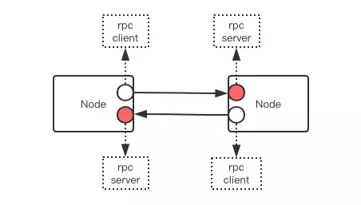

蚂蚁金服近期开源了研发多年的SOFA一篮子框架，其中就有一个非常核心的RPC框架，它叫SOFA-BOLT。小编今天花了近一天的时间仔细阅读研究它的源码，阅读过程中遇到了不少问题，蚂蚁金服的相关技术人员都非常耐心的及时解答了我的疑难。这里将我从中学到的知识点一并分享给大家。
SOFA-BOLT基于开源的Netty框架，同时提供了服务器和客户端的实现。它的源码非常值得一读，结构简单，考虑周全，绝不是一个普通的玩具。它没有滥用设计模式，源码阅读起来比较直接，没有太多绕来绕去的复杂结构。

一个节点既可以同时既是RPC服务器又是客户端，作为客户端该节点需要其它节点提供服务，作为服务器它可以为其它节点提供服务。不过上面这张图并不是合理的结构，因为两个服务相互耦合了，我需要你，你也需要我，就成了鸡蛋问题。比较合理的结构一般如下图所示，它们之间不构成环。
通讯协议
通讯协议是客户端和服务器之间交流的语言，SOFA定义了自己的一套通讯协议，它的编码解码分为二层，第一层是消息体对象的二进制序列化，这部分默认由开源的Hession协议库序列化完成，第二层是负责给序列化的消息体增加一系列包装字段，形成一个完整的消息。包括请求ID、消息体的长度、协议版本号和CRC32校验位等等
如果希望进一步优化网络性能，SOFA还提供了Snappy压缩协议，可以在现有的两层协议基础上增加第三层，能显著降低网络传输负担。压缩是时间换空间，提升网络性能的同时，它也会加重CPU计算，所以在使用时需要适当进行权衡。
连接池
客户端和服务器之间一般需要建立多个连接，但是也不能每个请求都建立一个连接。一般是通过维护一个连接池，限定最大连接数。客户端通过有限的连接来和服务器进行通信。
我们在使用Jedis客户端和Redis服务器进行通信时，也是通过连接池来获取连接的。Jedis的连接必须是线程独占的，因为它不是线程安全的。从连接池中获取连接时，其它线程就暂时拿不到这个连接了，待当前线程处理完毕后，要将连接归还给线程池，这样其它线程才可以继续使用这个连接。
Redis的客户端请求和应答是顺序性的，一问一答，所以请求和应答不需要唯一ID就可以建立起关联。
Bolt不一样，它的问答是乱序的，问和答之间是必须通过请求的唯一ID来建立起关联。Bolt的客户端是线程安全的，它可以同时传递多个请求，连接对象会维护一个正在处理的RPC请求对象字典。当客户端想要发起RPC请求时，它不是从连接池中摘出一个独占连接，而是随意选择一个连接来传递自己的请求，这个连接也可以被其它线程同时使用。
负载均衡
客户端提供了多种复杂均衡的实现，阿里默认使用带权重的随机算法(RandomLoadBalancer)，此外还有
- ConsistentHashLoaderBalancer 一致性hash，客户端和服务器之间的连接关系(谁跟谁连)比较稳定
- LocalPreferenceLoadBalancer 本地环回地址优先，提升本机调用性能
- RoundRobinLoadBalancer 循环依次来
- WeightedRoundRobinLoadBalancer 带权重的循环依次来
- RandomLoadBalancer 这个是带权重的随机，阿里的默认使用
服务器线程模型
服务器采用传统netty多线程模型，一个acceptor线程专门用来接收连接，然后扔给io线程处理读消息并解码成请求对象，最后扔给业务线程池进行处理。
心跳
客户端和服务器之间会有定时心跳检测连接的存活，默认30s来一次。tcp的关闭是通过FIN包来通知对方的，如果因为网络问题，对方连FIN包都收不到，那么即使一边关闭了套接字，另一边可能还以为连接正常。所以心跳检测存活机制在长连接应用里非常普遍。如果客户端连续发了三次心跳都没有收到服务器的回复，那么就认为连接已经关闭。服务器也会有连接存活检测，如果一个客户端连接90s内没有任何消息进来，那么也认为该连接已经断开。服务器不会主动发送心跳消息。
双工通信
RPC一般是由客户端向服务器发起一个请求，然后收到服务器的应答。Bolt的RPC是双工通信，服务器也可以向客户端主动发起请求，它们共享一个TCP连接。TCP连接本身就是双工的，所以这也不算什么奇迹。只是服务器在什么业务场景需要向客户端主动发起请求，这个蚂蚁并没有进行详细说明。
客户端作为主动连接方，它要负责重连和发起心跳消息。服务器作为被动方，它不需要处理重连，如果连接断开，它就直接将连接从集合中移除就行，不需要做特殊的处理，但是它会检测心跳消息，如果在一定时间内连接通道没有任何消息到来，它就会主动关闭。
重连
客户端的重连策略是一个单独的模块，有两个地方会成为重连的入口。一个是正常连接断开触发channelInActive回调，另一个就是重连连接不能建立成功时需要进行重试。Bolt有一个单独的重连线程，所有需要重连的连接会被包装成一个任务塞进这个线程的任务队列，该线程不断地从队列里拿任务进行重连处理，如果重连失败会尝试再将任务重新包装进队列延后继续处理。默认是1s钟处理一个重连任务。
RPC连接是延迟建立的，它在第一次客户端发送RPC请求时尝试进行连接，如果连接失败，它会立即继续重连最多默认两次。如果三次尝试连接后还是没有建立成功，就向上层爆出异常。它不需要包装一个重连任务塞进ReconnectManager，因为后续客户端请求会继续触发连接。
单向消息
RPC通常是一应一答，客户端可以同步等待响应，也可以提供回调接口等待结果通知。Bolt除了提供应答模式之外，还提供了oneway单向消息，这种消息服务器收到后不用回复，客户端发送请求之后就立即返回了也不需要等待结果。
oneway消息一般用于不那么重要的日志类消息，它不能保证服务器一定能收到，所以此种业务消息应该是那种允许丢失的消息，形式上类似于UDP，它在牺牲可靠性的前提下能大幅提升消息的吞吐量。
消息追踪
Bolt提供了回调接口，方便监控系统可以对请求的调用状况进行分析。监控的客户端可以通过实现该接口，注册进RPC的客户端和服务器进行打点收集日志，然后发送到日志分析系统。
`interface Tracer {
void startRpc(SofaRequest request);
void serverReceived(SofaRequest request);
void serverSend(SofaRequest request, SofaResponse response, Throwable throwable);
void clientReceived(SofaRequest request, SofaResponse response, Throwable throwable);
...
}`
总结
Bolt是一个成熟的比较复杂的RPC系统，这篇小文章只讲解了其中一部分，内部还有大量的实现细节有待去挖掘。